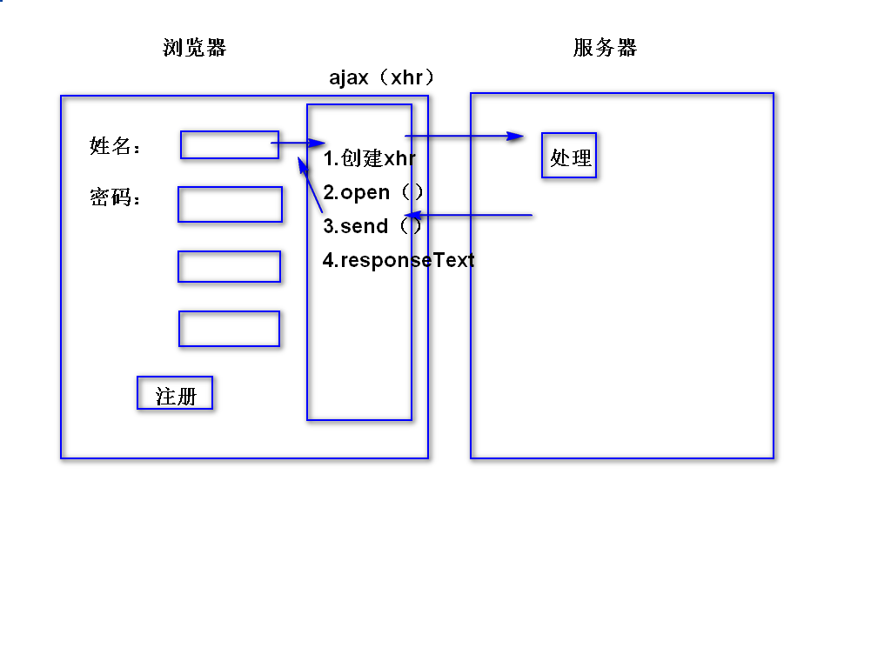

1.ssm整合
1）导入整合的jar包 mybatis-spring
2) 整合的步骤
<!-- Spring和mybatis整合 -->
<!-- 扫描持久层的包 -->
<bean id="scannerConfigurer"
class="org.mybatis.spring.mapper.MapperScannerConfigurer">
<property name="basePackage" value="cn.tedu.ssm.dao"/>
</bean>
<!-- SqlsessionFactoryBean工厂 -->
<bean id="factoryBean"
class="org.mybatis.spring.SqlSessionFactoryBean">
<!-- 依赖注入dataSource -->
<property name="dataSource" ref="dataSource"/>
<!-- 配置映射文件 -->
<property name="mapperLocations"
value="classpath:mappers/*.xml"/>
</bean>
2.ssm整合的工程
3.分析：页面-数据库（表） 开发：表-页面
1.在接口中定义方法IDeptService接口中
List<Dept> getAll();
2.在实现类中是实现方法
public List<Dept> getAll(){
//调用持久层的方法，返回list
return deptDao.selectAll();
}
测试：
url
/getAllDept.do
参数列表：ModelMap
响应方式：转发 ---showAll.jsp
@RequestMapping("/getAllDept.do")
public String getAllDept(ModelMap map){
1.调用业务层方法，返回list
2.把list添加到map中
3.return “showAll”；
}
1.在index.jsp页面上添加链接
<a href="${}/dept/getAllDept.do">显示部门信息</a>
2.在web文件夹中，新建showAll.jsp
3.在showAll.jsp页面上，显示集合的内容
1）把核心标签库导入
2）显示数据
<table border=1 >
<tr>
<th>部门编号</th>
<th>部门名称</th>
<th>部门地址</th>
</tr>
<c:forEach items="${list}" var="dept">
<tr>
<td>${dept.id}</td>
<td>${dept.deptName}</td>
<td>${dept.deptLoc}</td>
</tr>
</c:forEach>
</table>
1.在DeptDao接口中定义方法
void deleteById(Integer id);
2.在映射文件中编写sql语句
<delete id="deleteById">
delete from dept
where
id=#{id}
</delete>
测试：
1.在IDeptSerivce接口中，定义方法
void removeDept(Integer id);
2.在实现类中实现方法
public void removeDept(Integer id){
//调用持久层的方法
}
测试：
url
/removeDept.do
参数列表：id
响应页面：重定向
return "redirect:getAllDept.do";
@RequestMapping("/removeDept.do")
public String removeDept(Integer id){
//1.调用业务层的删除的方法
deptService.removeDept(id);
//2.设置重定向
return "redirect:getAllDept.do";
}
1.给删除文本添加链接
<a href="${}/dept/removeDept.do">删除</a>
1.用户管理
1.1 注册
1.2 登录
1.3 修改
2.地址管理
2.1 添加地址
2.2 查询地址
2.3 修改地址
3.商品管理
3.1 商品分类
3.2 展示商品
3.3 商品详情
4.购物车管理
4.1 显示购物车页面
4.2 管理购物车的商品
1.什么是ajax？不是新技术；由javascript,xml,XMLHttpRequest组合在一起；能实现异步提交的功能。
2.同步提交：当用户发送请求时，当前页面不可以使用；服务器响应页面到客户端，响应完成，用户才可以使用页面。
3.异步提交：当用户发送请求时，当前页面还可以继续使用，当异步请求的数据响应给页面，页面把数据显示出来 。
4.特点：异步请求 ，响应数据，提高用户的体验性。

1.工作原理：客户端发送请求，请求交给xhr，xhr把请求提交给服务，服务器进行业务处理，服务器响应数据交给xhr对象，xhr对象接收数据，由javascript把数据写到页面上。
1.创建xhr对象
function getXhr(){
//声明xhr对象
var xhr;
//判断浏览器是否支持xhr对象
if(window.XMLHttpRequest){
如果支持，那么直接创建对象
xhr = new XMLHttpRequest();
}else{
//不支持通常指IE5 IE6，使用以下方式创建对象
new ActiveXObject("Microsoft.XMLHttp");
}
返回xhr对象
return xhr;
}
2.xhr.open("get/post","xx.do",true);表示创建url
第一个参数表示发送请求的方式
第二个参数表示url
第三个表示是否为异步请求（true表示异步请求）
3.xhr.send();表示发送请求
第一：如果是get请求，函数的参数为空
第二：如果是post请求，参数列表为：
xhr.send(name=admin&pwd=123456);
4.xhr.onreadystatechange:监听，5种状态，从发送请求到响应完成。
xhr.onreadystatechange=function(){
if(xhr.readyState==4&&xhr.status==200){
var msg = xhr.responseText;
}
}
5.xhr.readyState:表示获取5中状态
0.表示未初始化
1.初始化成功，发送请求
2.接收响应数据
3.解析响应数据
4.响应成功
6.xhr.status:表示获取状态码
7.xhr.responseText:表示接收服务器端的文本
1.新建工程
1）maven项目
2）添加web.xml
3) 添加tomcat运行环境
4）依赖jar包 spring-webmvc
5) spring-mvc.xml
6) web.xml
2.创建web文件夹，在web新建register.jsp,添加两个文本框和一个按钮。
<%@ page contentType="text/html; charset=utf-8"
pageEncoding="utf-8"%>
<html>
<head>
<title>Insert title here</title>
</head>
<body style="font-size:30px;">
<form action="">
姓名：<input type="text"
name="name" id="name" onblur="checkName()"><br>
密码：<input type="password"
name="pwd" id="pwd"><br>
<input type="submit" value="注册">
</form>
</body>
<script type="text/javascript">
//获取xhr对象
function getXhr(){
//1.定义变量
var xhr;
//2.两个分支；判断浏览器是否支持xhr对象
if(window.XMLHttpRequest){
//如果支持，直接创建对象
xhr = new XMLHttpRequest();
}else{
//兼容ie5 ie6
xhr = new ActiveXObject("Microsoft.XMLHttp");
}
//返回xhr
return xhr;
}
//用户名异步验证
function checkName(){
//1.创建xhr对象
var xhr = getXhr();
//2.监听状态变化
xhr.onreadystatechange = function(){
//如果是第五种状态，并且状态码是200
if(xhr.readyState==4&&xhr.status==200){
//接收服务器端的数据
var msg = xhr.responseText;
alert(msg);
}
}
//3.xhr.open();
//获取文本框的值
var nameValue = document.getElementById("name").value;
xhr.open("get",
"../user/checkName.do?name="+nameValue,
true);
//4.xhr.send();
xhr.send();
}
</script>
</html>
3.控制器
@Controller
@RequestMapping("/user")
public class UserController {
//显示页面
@RequestMapping("/showRegister.do")
public String showRegister(){
return "register";
}
//处理异步请求
//@ResponseBody表示如果不响应页面，使用该注解
//如果响应页面，不使用该注解
@RequestMapping("/checkName.do")
@ResponseBody
public String checkName(String name){
//判断name，如果为admin，响应错误信息；
if("admin".equals(name)){
//设置状态码：0表示失败；1表示成功
return "0";
}else{
return "1";
}
}
}
1.表单
<body style="font-size:30px;">
<form action="" >
姓名：<input type="text"
name="name" id="name" onblur="checkName()">
<span id="namespan"></span>
<br>
密码：<input type="password"
name="pwd" id="pwd"><br>
<input type="submit" value="注册">
</form><br>
省份：
<select id="province" onchange="getCity(this.value)">
<option>请选择。。。</option>
<option value="1">河北省</option>
<option value="2">辽宁省</option>
</select>
城市：
<select id="city">
<option>请选择。。。</option>
</select>
</body>
<script type="text/javascript">
//获取xhr对象
function getXhr(){
//1.定义变量
var xhr;
//2.两个分支；判断浏览器是否支持xhr对象
if(window.XMLHttpRequest){
//如果支持，直接创建对象
xhr = new XMLHttpRequest();
}else{
//兼容ie5 ie6
xhr = new ActiveXObject("Microsoft.XMLHttp");
}
//返回xhr
return xhr;
}
//二级联动菜单
//cityCode表示省份的编号
function getCity(provinceCode){
//1.获取xhr对象
var xhr = getXhr();
//2.监听状态变化
xhr.onreadystatechange=function(){
if(xhr.readyState==4&&xhr.status==200){
var msg = xhr.responseText;
alert(msg);
}
}
//3.打开连接
//当发送post请求的时候，必须要设置content-type
//必须在send之前设置
xhr.open("post","../user/getCity.do",true);
xhr.setRequestHeader("content-type",
"application/x-www-form-urlencoded");
//4.发送请求
xhr.send("provinceCode="+provinceCode);
}
//用户名异步验证
function checkName(){
//1.创建xhr对象
var xhr = getXhr();
//2.监听状态变化
xhr.onreadystatechange = function(){
//如果是第五种状态，并且状态码是200
if(xhr.readyState==4&&xhr.status==200){
//接收服务器端的数据
var msg = xhr.responseText;
//在namespan节点，添加姓名是否可用的信息
if(msg=="1"){
document.getElementById("namespan").innerHTML
="姓名可以使用";
}else{
document.getElementById("namespan").innerHTML
="姓名不可以使用";
}
}
}
//3.xhr.open();
//获取文本框的值
var nameValue = document.getElementById("name").value;
xhr.open("get",
"../user/checkName.do?name="+nameValue,
true);
//4.xhr.send();
xhr.send();
}
</script>
2.控制器方法
//实现二级联动菜单
@RequestMapping("/getCity.do")
//不响应页面，使用该注解
@ResponseBody
public String getCity(String provinceCode){
if(provinceCode.equals("1")){
return "11,石家庄;12,秦皇岛";
}else{
return "21,沈阳市;22,大连市";
}
}
3.处理异步请求的响应数据的中文
<!-- mvc注解驱动（功能更加强大） -->
<mvc:annotation-driven>
<mvc:message-converters>
<!-- 设置异步请求响应数据中文不乱码 -->
<bean class="org.springframework.http.converter.StringHttpMessageConverter">
<constructor-arg index="0" value="utf-8"></constructor-arg>
</bean>
</mvc:message-converters>
</mvc:annotation-driven>